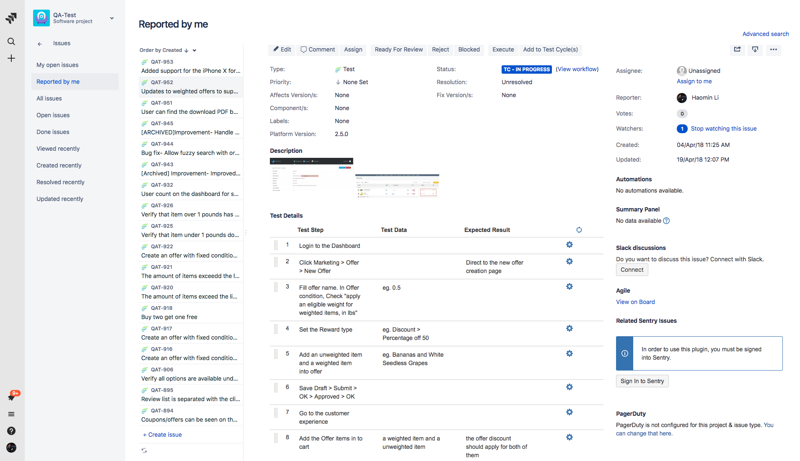
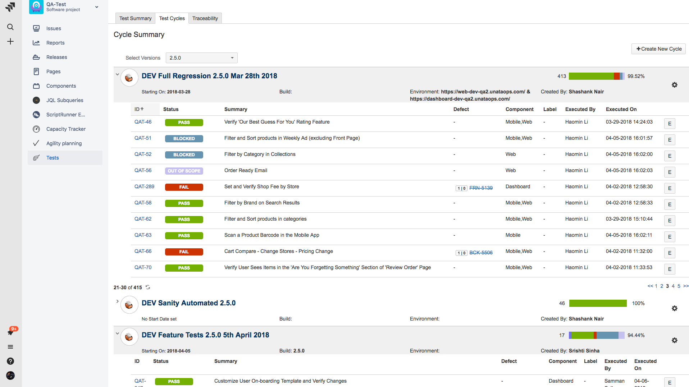

Instacart (Unata)
- Get used to the discipline of being a Quality Assurance. Understand Jira system, clients and terminologies of testing.
- Complete regression cycles and sanity(functional) cycles at least 4 times a week. Create Traceability Matrix and log defects.
- Start automating regression test cases by using Python Robotframework
QAT
Regression
Frontend Ticket